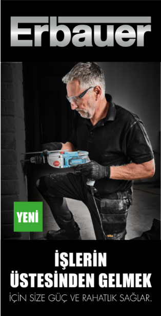
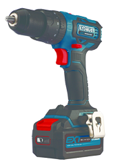
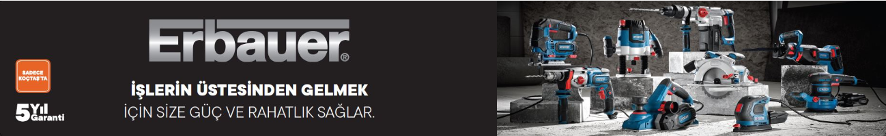

Geri dön


Erbauer
Erbauer, işlerin üstesinden gelebilmeniz için size güç ve rahatlık sağlar. Yıllar geçse de takım çantanızda hep yer alacak dayanıklı el aletleri üretir. Güvenilir, sağlam ve sade tasarımlı bu ürünler, yapılması gereken iş ne olursa olsun başarıyla tamamlar. 5 yıl garantili olan Erbauer ürünleri Türkiyede sadece Koçtaş’ta satılmaktadır. Yeni 18V akü size tek bir bataryayla birden fazla el aletini kullanma özgürlüğünü sunar. Kablosuz ürünlerindeki gelişmiş kömürsüz motor teknolojisi, sürtünmeyi ve ısı oluşumunu azaltır. Diğer kömürsüz ürünlere kıyasla, daha yüksek tork, daha yüksek hız ve daha uzun motor ömrü sağlar.

Keep Cool Teknoloji
Soğutmalı pil teknolojisi, sıcaklığı etkin bir şekilde yöneterek pil hücrelerini serin tutar ve hücrelerin aşırı ısınmasını önler. Bu teknoloji, çalışma süresini yüzde 25 uzatırken; yüzde 100’e varan uzun kullanım ömrü sağlar.